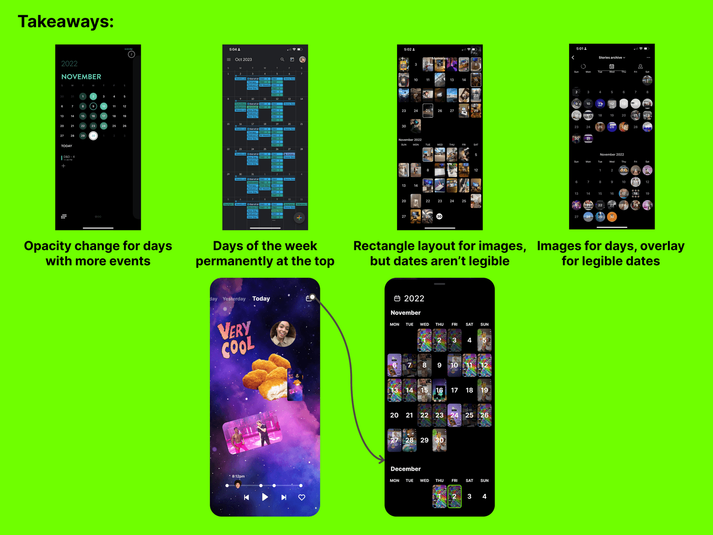

Product Design
Built out user flows for the rewind feature, calendar feature, image drawer, and sticker camera while building a universal design language and priortizing the design system.
Icon and Interaction Design
Created Icons such as the Image Search and Gif Icons, and added the Camera Shutter interaction
Design Systems
While at With, I helped establish their design system and taught other designers how to organize with components in Figma
The Basics
Role:
Jey Austen, a Senior Mobile Product Designer at With App, was responsible for leading the design of a new feature, a GIF drawer that also included a camera with sticker cutouts and a photo drawer. Jey's role was to oversee the entire design process, ensuring that the final product met the needs of the target audience, and help With App build and implement their design system, adding new components to the library in Figma.
Problem and Opportunity:
The problem With App faced was how to include the photo source (Giphy and Google Images) in their product while also establishing product-market fit for growth. This presented an opportunity for With App to improve their user experience and stand out in the crowded market of social media apps.
Key Stakeholders and their Priorities:
The key stakeholders in this project were the Chief Design Officer, the Chief Executive Officer, and the User Researcher. The CDO and CEO were focused on ensuring that the final product met the company's business goals, while the User Researcher was focused on understanding the needs and desires of the target audience.
The Discovery
Who are the users/audience:
The users/audience for this project were primarily Gen Z focused app users who frequently use social media and messaging apps. The goal was to design a feature that would appeal to this demographic and improve their experience using the app.
Research and Competitor Analysis:
Jey and the team conducted research on popular social media apps such as Instagram, Twitter, and Shuffles (Pinterest's new Sticker collage app) to understand the current market offerings and identify opportunities for improvement. Additionally, the user researcher interviewed focus groups of high school and college students to gather feedback and insights on the product. This research helped inform the design of the GIF drawer feature.
The Process
Strategize:
Jey and the team developed a strategy that focused on creating a seamless user experience while also incorporating the desired features (GIF drawer, camera with sticker cutouts, and photo drawer). They aimed to make each feature easy to use and understand while also being visually appealing. Feature ideas came from suggestions discovered by the user researcher through focus groups for 18-24 year olds. Jey also analyzed competitor apps for common design patterns and user flow, so that the app wouldn't be confusing to new users.
Visualize:
To bring the design to life, Jey and the team created wireframes and hi-fidelity prototypes in Figma. These were used to test the design with users and gather feedback. While Jey contracted at With, they also developed With's design system and taught the other designers how to use components in Figma
Experience:
Throughout the design process, Jey and the team were focused on ensuring that the user experience was as smooth and enjoyable as possible. They conducted user testing at various stages to gather feedback and make necessary adjustments. While Jey contracted at With, they also developed With's design system and taught the other designers how to use components in Figma
Feedback:
Jey and the team gathered feedback from users and stakeholders via sharing the prototypes to ensure that the final product met the needs of the target audience and the company's business goals. This feedback was used to make final decisions and trade-offs, such as making the "gif" font more bubbly to look like an icon, and making the camera sticker button a star that closes like a shutter when a photo is taken.
The Outcome
Final Decisions and Tradeoffs::
Jey and the team made several trade-offs during the design process to ensure that the final product met the company's business goals, was visually appealing, user-friendly and consistent with the design system.
Through this project, Jey and the team learned the importance of user research, incorporating feedback throughout the design process, making trade-offs to achieve a polished final product that meets the needs of the target audience and the company's business goals, and the value of having a robust design system in place.
Case Studies

2022-Sr Product Designer
Product Design, Interaction Design, Design Systems

With
A groupchat app meant to bring far apart friends close together
2022-Brand Owner
UX/UI Design, Art Direction, Product Design

Hitched
Join banking for couples combining their finances for the first time
2021-Brand Owner
UX/UI Design, Art Direction, Product Design

Locality
Bank serving small business owners of South Florida
2020-Brand Design Lead
Brand Design and Art Direction

Create
An inclusive space for people in creative tech to share their life + work